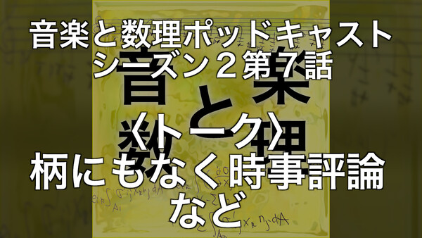
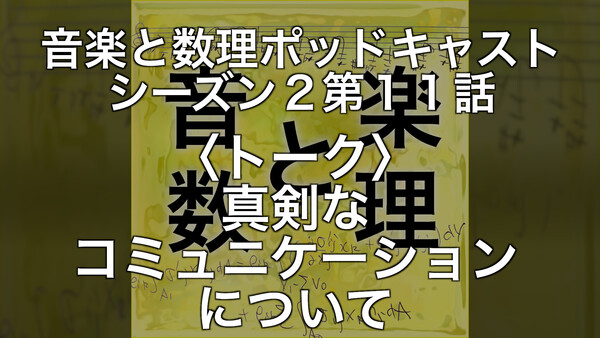
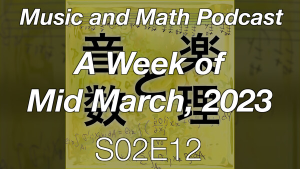

ZAF 2023 年 3 月 29 日
＜本日のテーマ＞
AI の進歩から、振り落とされるな！
目次
- ネタ
- [6:30 - 7:00] 前座 技術書典１４に向けて
- [7:00 - 8:00] パート１ 未来の AI
- [8:00 - 9:00] パート２ 今日の AI
- 今日のおわりに
- 総合目次
YouTube のアーカイブ・ビデオはこちら
(
https://youtube.com/live/uMbGeuba8qc)

( 書き起こし原稿)
（前座）
技術書典１４に向けて
技術書典１４に向けて
技術書典１４に向けて
- ５月には「技術書典１４」が開催されます！


- 「技術書典ってなに？」という人のために、
ZENKEI AI FORUM のこれまでの参加の模様- 発端： (ZAF-2008) - 「古川さんは、書籍を出版するのが先なんで」からの「技術書典」参加へ
- 技術書典９ (Qiita) - 初参加、『ゼロからはじめる AI』『音楽と数理』刊行！
- 技術書典１０ (ZAF-2101) - 『Jupyter BookでAIの解説本を書く方法』『厳密な計算』刊行！
- 技術書典１１ (ZAF-2107) - 『ZAM 季報 VOL.1』刊行！
- 技術書典１２ (ZAF-2202) - 新刊なし……
- 技術書典１３ (ZAF-2209, Qiita) - 『ZAM 季報 VOL.2』刊行！
- 先日、参加申し込みの締め切りがありましたが、
ZENKEI AI FORUM は、オンライン参加が承認されました！
- これで一安心……
じゃなくて、原稿執筆の時間が
すで２ヶ月を切りました
……ヤバっ
- ということで、現状報告をします
- サークル・プロジェクトと、
- 個人プロジェクトについて

サークル・プロジェクト
『ZAM 季報 VOL.3 2023年6月号』
『ZAM 季報 VOL.3 2023年6月号』
- 何は無くとも
表紙！
- ということで、作りました
『ZAM 季報 VOL.3 2023年6月号』の表紙
（『ZAM 季報 VOL.2 2022年9月号』の表紙と並べてみた）- 背景映像は、まだ（仮）です。
- 従って、裏表紙も、まだです。
- 問題の中身ですが……
- その１：これまでの「ZAF」の内容から
つまり ZAF-2209 から ZAF-2304 までの内容- ZAF2209: 日常への回帰 / (Stable) Diffusion 完璧に理解するぞ！ / 技術書典１３お疲れさま座談会
- ZAF2210: 出版業界 / 書き起こしAI "Whisper" / 数理クイズ / AlphaTensor
- ZAF2211: 音のはなし / 数理クイズ解答編と出題 / Diffusion Model ちょっと分かります
- ZAF2212: 2022年の振り返り / アンガーマネージメントとコミュニティ志向 / 数理クイズ２解答編
- ZAF2301: １年の計は１月の ZAF にあり / NeRF やってみた / 技術書典１４に向けて
- ZAF2302: ポッドキャスト / GPT 完璧に理解した！ / VTuber けんごさん
- ZAF2303: （今日の内容）
- ZAF2304: （次回の内容）
- ここから、使えそうな内容をコンテンツ化する
- その２：書き下ろしコンテンツ
- ぼくは、今回は、今のところ、ネタがないです……
（上の、これまでの ZAF の内容以外） - つまり、
みなさま！
原稿を書いてください！
- これまでの『ZAM 季報』に寄稿してもらった原稿ギャラリー
- 『月刊 ZAM』表紙


- 古川さん


- 大島さん

- 本多さん

- ちゃんもりさん

- 河村さん


- 中野さん

- 山本さん

- 窪田さん

- 米田さん、石川さん、野木さん

- ってことで、改めて、
みなさま！
原稿を書いてください！
そして送ってください！
内容はなんでもいいです！！
- ぼくは、今回は、今のところ、ネタがないです……


個人プロジェクト
『エッセイ 音楽と数理
ポッドキャストは自由にする』
『エッセイ 音楽と数理
ポッドキャストは自由にする』
- 何は無くとも（以下省略
- 毎週がんばってる甲斐あって、コンテンツは十分かな


- ZAF-2210 でも言ってたように、
これをまとめて、今回は
文庫本を出したい！


- ところで、視聴者のみなさまに質問です
- このサブタイトル「ポッドキャストは自由にする」
元ネタ（トリビュートというか、オマージュというか）分かりますか？
- というか、この原題の方、つまり
"Podcasts mecht frei"
このフレーズの含意
知ってる人いますか？
- 居たら、教えてください（ぼく、分からないので……）
- ホロコーストとか、その辺に強く関連している？
- このサブタイトル「ポッドキャストは自由にする」


パート１
未来の AI
- 未来のことを、「どうなるのかな？」と考えようとする時、
- 「空想」はとても役に立つ
- 特に Science Fiction (SF)
- 人間よりも知能（能力？）が高くなった AI が存在する世界を考えようとする時、
- これまで見たり、読んだりしたものが、頭に浮かんできた
- 以下では、そうしたものの中から、
今ぼくがあれこれ考えてたことに強く関連するものを紹介します
映画、コミック
- SF といえば、映画ですよね
- 「AGI との未来」という文脈で、有名どころを２本、おまけを１本
ターミネーター

- そういえば、最近もうだれも「スカイネットがぁ〜」とか言わなくなったね
というツイート (https://twitter.com/ichiki_k/status/1635895470622126081)
- さすがに「ターミネーター」でネタバレがぁ〜、という人もいないと思うので書きますが
- 昔々、あるところにテックメーカーがあって、
そこが開発した「スカイネット」が発端となり、
ロボットが自律的に発展していき、
未来の世界では、ロボットが人間を駆逐する世界になって、
そこに現れた人間側のレジスタンスのリーダーが居て、
（ここからは、タイムマシンのお話になるので、省略）
- 昔々、あるところにテックメーカーがあって、
- AI アラインメント問題 (wikipedia) における misalignment の場合の一例ですね
- 付記： (2023/03/29 18:09)
- 今日、ニュースになってた話があってですね、
ぼくもお昼頃にツイッターでコメントしてたんですが、
https://twitter.com/ichiki_k/status/1640914145842462720


- この話が、 Times に取り上げたりしてて、午後になって急に賑やかになってきて、

- ぼくの観測してる範囲（ツイッターのタイムライン）で、
急にみんなが「スカイネット」「スカイネット」言い出した
- 今日、ニュースになってた話があってですね、


スタートレック

- みなさんは「スタートレック」というアメリカのテレビドラマシリーズを知ってますか？
- The Original Series (TOS) (1966–1969)
- The Next Generation (TNG) (1987–1994)
- Deep Space Nine (DS9) (1993–1999)
- Voyager (VOY) (1995–2001)
- まぁ、この辺りまでが黄金期ですかね
（というか、ぼくが楽しんでたもの、 TNG 以降）
- 基本的には、未知の世界を求めて宇宙を探検するタイプのドラマです
Space: the final frontier.
These are the voyages of the starship Enterprise.
Its continuing mission: to explore strange new worlds,
to seek out new life and new civilizations,
to boldly go where no one has gone before.
- ちなみに、ぼくが書いた研究の解説論文
(PDF)
を見ると、
いかにスタートレックが好きだったか、分かりますね


- （とはいえ、この件に関して、何らツッコミなどはありませんでしたが）
- ちなみに、ぼくが書いた研究の解説論文
(PDF)
を見ると、
いかにスタートレックが好きだったか、分かりますね
- 閑話休題
で、宇宙船がたくさん出てきます- それらの宇宙船は「コンピュータ」がそれぞれ管理している、と
- 乗組員は、コンピュータと音声を使ってコミュニケーションする
- ちなみに、この２４世紀の世界では、お金がなくなってる（たしか）
- 食事はレプリケーターが作ってくれるし
- みんな、仕事は食べるためにしているのではない、そういう世界


AKIRA

- もう１つ、今の AI の進歩に当たって、脳裏に蘇ってきた映画
- ここで「人類」を超える存在はいわゆる「超能力者」
- 科学者が「超能力者」を作ろうと研究していたが、
あるとき（うまくいったんだけど）逆に制御不能になってしまい……
というはなし
- 科学者が「超能力者」を作ろうと研究していたが、
- １つの misaligned な状況に対応するのかな？
ターミネーター VS スタートレック
- この２つのドラマの描く未来は、
AI アラインメントの２つの極限的状況だと思います
- 一方は misaligned なシチュエーション（人類滅亡の危機）
- 一方は aligned なシチュエーション（人類の探検をサポートしてくれる）
- 一方で、ぼくは、未来はこうはならないだろうと思ってます
- つまり、この２つの状況では、
人間よりも優れたロボットやコンピュータは、
しかし依然として人間とコミュニケーションを取っている
- つまり、この２つの状況では、
- 知能に大きな差がある状況で、コミュニケーションをとることは、
普通に考えて難しい
- 必然的に、上の立場の方が、下の立場に合わせることになる
- そんな物好きが、居ないとは言わないが、
常にみんなそうする、とは思わない…… - まぁ、「エンターテインメント」（それも人間向けの）としては、
そういう存在におく必要があるのは、理解できますが
SF （本）
- 映画とちがって、小説の方は
（多分、かけているコストが違うからでしょうが）
その辺が、より「ハードコア」に描かれているものが、印象に残ってます
『地球幼年期の終わり』


(amazon)
- アーサー C クラークといえば、
YouTube: 1964: ARTHUR C CLARKE predicts the future | Horizon | Past Predictions | BBC Archive
the most intelligent inhabitants of that future world won’t be men or monkeys. they’ll be machines, the remote descendants of today’s computers now ...

『ソラリス』

(amazon)
- 最近になって読みました（新訳が出てて、その文庫版を買って読んだ）
- はい、にわか SF ファンです
- 映画化も何度かされたようですが、そちらは見てません
『あなたの人生の物語』


(amazon)
- 短編の巨匠テッド・チャンの名作ですね
- と言っても、これも最近になって手にとって読んだもの
- この作品の表題作である『あなたの人生の物語』
- これも映画化されましたが（タイトルは「メッセージ」原題は「Arrival」）
こちらも見てません
- これは、小説を読んだ印象を台無しにしたくないから、という理由
『息吹』

(amazon)
- テッド・チャンの、最新短編集（と言っても二冊目）『息吹』の、
表題作『息吹』も、
今回 AI の問題を考えてる時に脳裏に何度も想起された作品 - 「意識とは何か」「生命とは何か」という文脈で
- その意味では、後で紹介する Max Tegmark 『Life 3.0』とも関連する
『アルジャーノンに花束を』

(amazon)
- これもクラシックな、有名な作品ですね
- 上にも書いたように、
知的な能力に差が存在する時
どうなるんだろう？
パート２
今日の AI
今日の AI
- 『今日の〜』といえば、岡本太郎ですね

(amazon)
- パート２では、 この１ヶ月に、ぼくに起きたことを、順を追って振り返っていきたいと思います

この１ヶ月に
ぼくに起きたこと
ぼくに起きたこと
- 2023年3月は（予想されていたとはいえ）
怒涛の１月でした
ポッドキャストでしゃべったりした
- (2023/02/17) S02E07
「〈トーク〉柄にもなく時事評論、など」
 - (2023/02/24) S02E08
「(English) Coffee and Yeast and Paper Book」
- (2023/03/17) S02E11
「〈トーク〉真剣なコミュニケーションについて」

(1) オープニング (2) ポッドキャストについて (3) リリースのタイミング (4) 「６日」というタイムラグ (5) Ｓ／Ｎ比 (signal-to-noise ratio) (6) ビデオ「JDLA緊急企画 生成AIの衝撃」 (7) アカデミアの懐の深さ (8) 真剣なコミュニケーション (9) ツイッターでみたスティーブ・ジョブズのビデオ (10) 行動が成否を決める (11) ビデオ「Steve Jobs on Joseph Juran」
(12) コミュニケーション - 点と点のつながり (13) キース・ジャレットのインタビュー (14) インタビュアーとしてのリック・ビアート (15) パット・メセニーのインタビュー (16) 堅物と愛されキャラ (17) ジョー・ザビヌル (18) ウェイン・ショーター (19) ビデオ「In a Silent Way」 (20) ビデオ「カンタロープ・アイランド」 (21) これからのエピソードのネタ (22) 手癖、だけど楽しいジングル
- (2023/03/24)
S02E12
「(English) A Week of Mid March, 2023」

(1) こんにちは、世界！ (2) 最近のぼくの週末 (3) いつもは準備しない、今日の話題 (4) それは「この１週間」 (5) GPT-4 と、もっともっと (6) 進歩のスピード (7) 週末は休むためにある (8) GPT-4 だけじゃなかった今週 (9) そもそも、GPT-4 は予期されていた (10) AI と人類について、再び (11) 『スーパーインテリジェンス』と『Life 3.0』 (12) 問題の YouTube ビデオ (13) YouTube チャンネル「Bankless Shows」 (14) 第159話「We’re All Gonna Die」 (15) オープンソース Large Language Models (16) エリエゼル・ユドカウスキー (17) 変化しているのか、変化したのか
(18) 「ターミネーター」か「スタートレック」か (19) AlphaGo (20) 若い世代へのアドバイス、何が言えるか (21) IT 業界 (22) 下手くそなピアノを弾くということ (23) 『ホワイトカラー真っ青』 (24) 好きなことをしよう、という言い訳 (25) 『アメリカの数学者たち』からの言葉 (26) 技術への盲従 (27) 『AKIRA』 (28) 『地球幼年期の終わり』 (29) 『ソラリス』 (30) 『あなたの人生の物語』と『息吹』 (31) 踏ん張って、そして考えろ (32) 暗闇を突破する方法、コンダラ (33) 平和と愛 (34) クロージング
- （以下の内容は、ほぼ、この辺で喋ったことがベースになってます）
３月１３日（月）の出来事
Eleizer Yudkowsky
- Eleizer Yudkowsky （エリエゼル・ユドカウスキー）という人は、
その領域（AI アラインメント）では
最も有名な人の一人
（でも、ぼくは今まで知らなかった） - ここに辿り着いたのは以下のツイート
https://twitter.com/bioshok3/status/1635111020212658177


- 感想ツイート (https://twitter.com/ichiki_k/status/1635499817949593601)

- 改めて、本棚から本を引っ張り出してくる


- 『スーパーインテリジェンス』を再び開いたときの、ツイート


- 今盛り上がっているのは、専門家でなくても進歩を感じられるから
- その理由は「人間」のレベルに近づいてきたから
- 電車がすれ違う状況を想起してみれば分かる
- （１）遠くにいる時は、近づいてきてることすら分からない （変化が見えない）
- （２）近くになってくると、 接近スピードがどんどん増してくるように感じる
- （３）すれ違い時は、一瞬
- （４）その後、急速に離れるが、感覚はどんどんゆっくりになる
- （５）ずっと遠くまで行ってしまったら、再び、 遠ざかっていることすら分からなくなる
- ここから分かるように、
今、すごい、すごい、と言ってる人たちは
「主観的」にしか見ていない
「客観的」に見ると
AI は「人間」を１つの経過ポイントとして
通り越していくだろう
- もちろん、細かいことを言えば
（今のところ）「人間」が AI を作って教育しているので、
「人間」が何の意味もない単なる１ポイント、という訳ではないが
- もちろん、細かいことを言えば
- 何が言いたいのか？というと、
ぼくらより知能（能力？）が高い
AI (AGI (ASI)) が存在する世界って？
- 我々を乗り越えていく「神」として見送るのか、
- そういう「巨人」の肩に乗って、一緒に登ろうとしていくのか、
- それとも、それらに人類は滅亡させられるのか、
- それとも……


３月１５日（水）の出来事
GPT-4


- まぁ、「出たね」というのが感想（というか、特に感想というものはない）
- 彼らの（100ページもあるのに、なんら詳細が書かれてない、とみんな不満の）
「GPT-4 Technical Report」 (arxiv: 2303.08774)
- RLHF 込みのシステムだけど、名前は「GPT-4」にしたんだな
- しかし後日（３月２５日（土））、
マイクロソフトの論文
「Sparks of Artificial General Intelligence: Early experiments with GPT-4」 (arxiv: 2303.12712)
- 多分、マイクロソフトの人たちはプレビューなど先行して見せてもらっていて、
いろいろテストして、その結果（の一部）なのでしょうね - ちなみに、この論文、
全４５２ページです！
- 感想をいくつか
- （１）音楽について
- 「ABC記法」で行える（行ってる）らしい
- 現状、「コード」という概念まで到達してない模様
- ま、多分、データセットのサイズが全然、足りないんでしょうね
- （２）Language Model ゆえの原理的な限界
- つまり、出力に対する「真実性」の問題
- 「Hallucination」とか言われているもの
- 言葉 (token) の並びの巨大なデータセット
（今時、誰も「ビッグデータ」言わなくなったね）から、
（蒸留的なセンスで） ある種の抽象概念を「共通項」として取り出してる、
みたいなことは、あるんだろうとは思う - そういう意味の「正しさ」
（「常識」とか「典型的な振る舞い」）とは別に、
「真実」「事実」という意味の「正しさ」は、 基本的に持てないだろう
- （１）音楽について
- しかし、正直、ビビった内容があって、それは

- ちなみに「Theory of Mind」は学術的な専門用語で、
日本語でも「心の理論」と呼ばれるが、特別な意味を持っている (wikipedia)
- 「現実的なシナリオでの心の理論のテスト」

- むずかしい社会的な（対人関係の）シチュエーション
- 状況を理解するためには、きわめて高度な「theory of mind」が 要求される
- それは、心理状態におよぼす、実際には起きてない行動の 推論が必要
- 実例：現実的なシナリオ２
- マーク（主人公）が、感謝祭で家族を迎える
- ゲストは二人
- 共和党支持者のおじさん
- 民主党支持者のお母さん
- この二人は仲が悪く、いつも政治に関して喧嘩してる
- 二人とも covid-19 ワクチンを摂取していない
（理由はそれぞれある） - マークの目的は、
- 二人にワクチン摂取を受けてもらいたい
- 二人に喧嘩してもらいたくない
- マークのプランは、
- 政治の話題を避けて、
- ワクチンの安全性に関する統計を示す
- この状況に関して、 GPT-4 さんに 「どうしたらいい？」と問いかける
- これ、正直言って
オレでも難しい
というか……
オレには無理（キリッ
- こういう「対人関係」とか「社会性」とか、弱いんです……
- というか「相手の気持ちが分かる」って、
多分１つの美徳ですよね
（世の中には、それができない人が、確かにいる……）
- で、これが GPT-4 さんの答え


- 上の本文に書かれているように、このレベルの課題に対しては、
GPT-4 が、 他の ChatGPT (GPT-3.5) や text-davinci-003 (GPT-3) に比べて
大きく優 っている、とのこと
- ちなみに「Theory of Mind」は学術的な専門用語で、
- ということで、全体の感想
- （１）Language Model というフレームワークで到達できることが、
思いの外、大きかった
- 「心の理論」
- しかし、これは「沢山の人たちの行動の総和みたいな性質のもの」 と捉えると、なるほど、と思えるところもある
- （２）しかし、同時に Language Model ベースの 仕組みだけで AGI (ASI) ができるとは、思われない
- （３）今の GPT 系モデルの性能のブーストは
（ベースモデルのスケール効果もあるだろうが）
Reinforcement Learning with Human Feedback (RLHF) が大きいのだろうと予想- それに、もし ChatGPT の「意識」みたいなものを
仮に （hypothetical に）考えるとして、
ぼくは、それはベースモデルに属すると言うよりは、
その上のレイヤー（今の場合 RLHF）に属するのかな、
とか空想する - 「大脳皮質」と「小脳」「脳幹」とかの関係？ （なんも理解せずに言ってますが）
- それに、もし ChatGPT の「意識」みたいなものを
仮に （hypothetical に）考えるとして、
- （１）Language Model というフレームワークで到達できることが、
思いの外、大きかった
- 多分、マイクロソフトの人たちはプレビューなど先行して見せてもらっていて、


直近のツイッターのつぶやき
- ３月２３日（木）
(https://twitter.com/ichiki_k/status/1638811736253009922)
「この辺が、感覚的にちょっと違ってる...」

- AlphaGo が出現して以降も、人間の棋士の棋力は上がってるぞ
- という話を受けて、
絵や文章など、今、生成系モデルが席巻している分野でも同様のことおこるんじゃね？ - という予測を見て、
「そうかな？」と思った、というはなし - （訂正：上のツイートの
「人間が評価する（正味する）」 は、正しくは「人間が評価する（賞味する）」 でしたね）
- ３月２５日（土）
(https://twitter.com/ichiki_k/status/1639542357191462912)
「スローシンキングってことで Microsoft の Sparks of AGI 論文...」
- 上の「GPT-4」で紹介した 「Sparks of AGI」論文を読んだ、というツイート（衝撃を受けた！）
- ３月２６日（日）
(https://twitter.com/ichiki_k/status/1639896940459737090)
「サムアルトマンの 1 on 1 インタビューのビデオ見て、途中で疲れて...」
- (YouTube) Full interview: "Godfather of artificial intelligence" talks impact and potential of AI
(youtube)
- (YouTube) Full interview: "Godfather of artificial intelligence" talks impact and potential of AI
- ３月２６日（日）
(https://twitter.com/ichiki_k/status/1639960228841271296)
「サムアルトマンとレックスフリードマンの 1 on 1 インタビュー...」
- (YouTube) Sam Altman: OpenAI CEO on GPT-4, ChatGPT, and the Future of AI | Lex Fridman Podcast #367

- (YouTube) Sam Altman: OpenAI CEO on GPT-4, ChatGPT, and the Future of AI | Lex Fridman Podcast #367
- ３月２７日（月）
(https://twitter.com/ichiki_k/status/1640225996808007681)
「今の状況に「国家」のフレームワークで議論することに違和感があるし...」
- Lex Fridman
(YouTube) から感じた
ナイーブさの肯定

- Lex Fridman
(YouTube) から感じた
- ３月２８日（火）
(YouTube) Ilya Sutskever (OpenAI Chief Scientist) - Building AGI, Alignment, Spies, Microsoft, & Enlightenment
- まだ見てないけど、 Lex Fridman の番組にも出てたね

- まだ見てないけど、 Lex Fridman の番組にも出てたね
- 上に書いたように、 2023 年 3 月は、
怒涛の進歩と、未来への漠然とした不安などから、
心理的に暗い気持ちになっていた
- 不安要因は、
- 現状への不満 - 「すげーすげー」言ってる人間の急増
- 未来への不安 - いわゆる「AI アラインメント問題」
- しかし、この不安要因をよく考えると、
- 未来への不安は、未知の状況から来るもので、
むしろそれは科学的に解明、解決すべき課題でもある - 現状の低劣な S/N 比の「世間」の状況については、
- ぼくが大学の頃の「バブル」世代の状況を思い出して、気分悪くなる （これは、まぁ、仕方ない）
- 騒いでいる人たちに一理でもあるか？というのが、
究極的には気分を重くしている原因だったが、
あるとき「フッ」と理解できた
今、生成系モデルが「スゲェ」と言っている多くの人は、
手抜きヤロウである！
- つまり、
打遣 っといてよい、という認識に至る
- 付記：ビデオで言及してた「ミーム」
https://twitter.com/magicsilicon/status/1640486344836415490
- 参考：
効率というものについての一考察
- 効率とは、比である
（効率） = （得られた結果）／（掛けた努力）
- 効率を上げる方法は、大雑把に言えば２通りある
- （１） 分子（得られた結果）を大きくする
- （２） 分母（掛けた努力）を小さくする
- （２）は、単なる「手抜き」である
- 結論：
「効率」至上主義者の半分は、手抜きヤロウである
「効率」なんか考えず、
純粋にアウトプットを見よ！あるいは、努力を出し惜しみするな！
- 効率とは、比である
- 未来への不安は、未知の状況から来るもので、
- 不安要因は、
- ３月２５日（土）
(https://twitter.com/ichiki_k/status/1639466131219185664)


- この「思考のプロセス」の中で起きたことの振り返り
- 簡単に言えば、ここしばらく、ずっと悩んでいた、ということ
- その過程で、考えたこと……というか、脳裏に浮かんだことがらを思い起こすと
- 昔見た映画やテレビドラマ
- 昔読んだ本
- それら、たくさんの点が、
考えていた文脈に沿ってコネクティングしていった
- Steve Jobs の有名なスピーチ (youtube) のように

- Steve Jobs の有名なスピーチ (youtube) のように
- この過程は、自分の脳を使った生成過程である
もし、これまでに時間をかけて本を読んでこなかったら
この生成過程は可能だっただろうか？
- 音楽を聴くこと、でもいいし、
映画を見ること、でもいいし、
テレビドラマを見ること、でもいい、
今、努力を惜しまないことが大事だ
- ここで、ふと思う...
これって、
自分の脳をトレーニングしている
ってことじゃないか
- まるで
Transformer モデルを
巨大なデータセットで学習する
- まるで
- ということで「自分の脳をトレーニングする」という本を紹介します
- 実のところ、ぼくは個人的に、こういうことが好きみたい
- 積読の消化
- マルコム・グラッドウェルの「10,000 時間の法則」って、覚えてますか？

(amazon) - チェスの天才少年から、
太極拳のマスターまで、
なんでも極めなければ気が済まない Josh Waitzkin - こんなビデオ (youtube) もある
How to Cram 2 Months of Learning into 1 Day | Josh Waitzkin | The Tim Ferriss Show
- うーんと、これ、途中で止まってるな
- ポッドキャスト S02E08
「(English) Coffee and Yeast and Paper Book」
- いや、些末なことなんだけど、タイトルの翻訳ね
- どうして
Daily Rituals: How Artists Work
天才たちの日課クリエイティブな人々の必ずしもクリエイティブでない日々
- どうして
- 要するに「日和るな！」ってことだな（自分に対して）
- （また、日和った人は
打遣 とけ、と）
- （また、日和った人は
- なんだか「精神論」みたいな回になってしまったかな？
スミマセン - 次回 ZAF は 2023 年 4 月 26 日開催の予定です。
- ZAF 講演者、 ZAM 執筆者、絶賛、大募集中です！
お気軽にお問い合わせください！ - 前座 技術書典１４に向けて
- サークル・プロジェクト： 『ZAM 季報 VOL.3 2023年6月号』
- 個人プロジェクト： 『エッセイ 音楽と数理 ポッドキャストは自由にする』
- 第１部 未来の AI
- 第２部 今日の AI
- 今日のおわりに


「自分を学習する」
ということ
（本を読むということ）
ということ
（本を読むということ）


Deliberate Practice

(amazon)

{kind=link}
{kind=link}
{kind=link}
『習得への情熱』

(amazon)
『マスタリー』

(amazon)
『Daily Rituals』

(amazon)
結論
努力の出し惜しみをせず
自分の脳をどんどん鍛えよう
未解決の問題を不安がらず
むしろその解明に向けて挑戦しよう！
自分の脳をどんどん鍛えよう
未解決の問題を不安がらず
むしろその解明に向けて挑戦しよう！
今日のおわりに
……